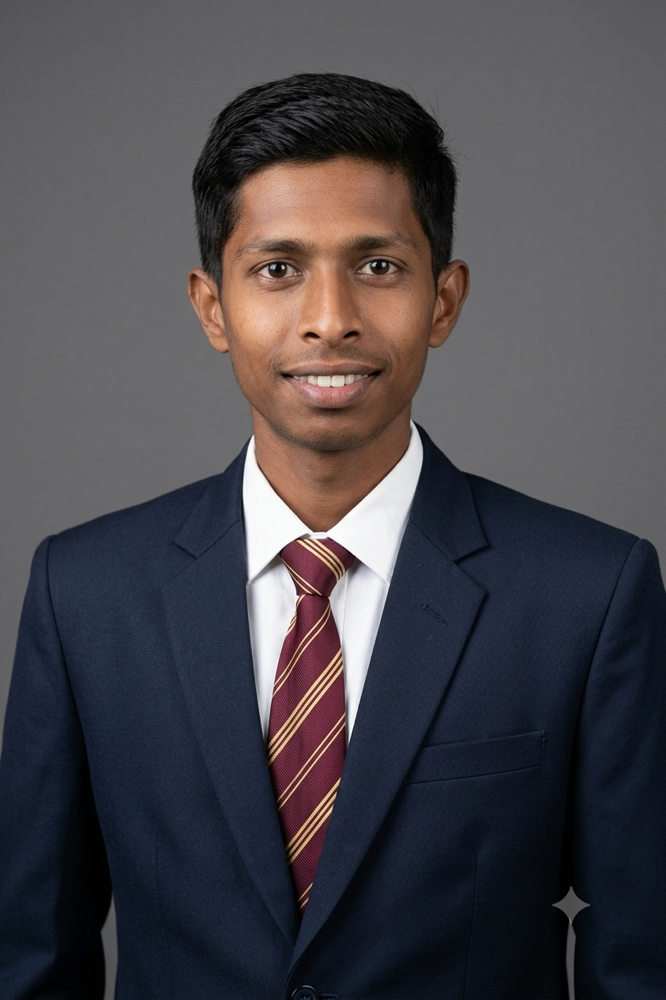

Computer Engineering Student | Writer & Content Creator | Tech & Literature Enthusiast
Get in TouchI am currently pursuing my Diploma in Computer Engineering (5th Semester) under the MSBTE K-Scheme, with a keen focus on core subjects like Operating Systems, Software Engineering, and Java Programming.
Alongside my technical pursuits, I have a deep passion for Marathi literature, poetry, and creative writing. Under my personal creative initiative "Writing Regularly," I consistently express my thoughts and reflections into words. I believe in blending technical logic with creative art, constantly learning, and building exciting projects along the way.
शब्द हेच माझे विश्व आहे. कविता आणि लेखनाच्या माध्यमातून विचारांना वाट करून देणे हा माझा स्थायीभाव आहे.
Diploma in Computer Engineering
MSBTE K-Scheme (3rd Year, 5th Sem)
Advanced computer network, Operating Systems, Software Engineering, Basic Web Development
Marathi Poetry & Writing, Social Media Content Management (@_writting_regularly_108), Video Vlogging
Let's connect! Whether you want to discuss tech, literature, or collaborate on a project: